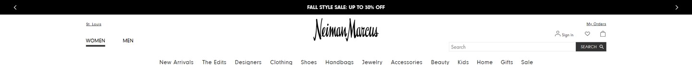
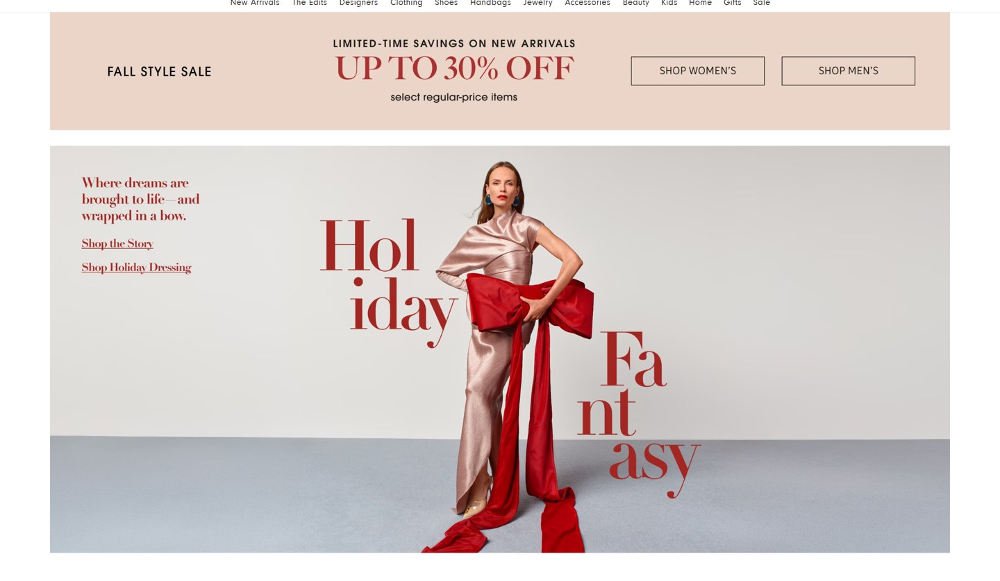

Estados Unidos
Cambiar consultaTienda online que compite por lujo y exclusividad
Los seleccionados
Los dos sitios más visitados que compiten de esta forma, según estadísticas de tráfico.
En resumen: lo que hacen los líderes
Estilo visualPaletas muy acotadas, tipografía con serifa o en mayúsculas espaciadas y fotos editoriales con mucho aire.HeaderLogo centrado, secciones por público y buscador chico.Primera pantallaFoto editorial grande o elección de público; los precios casi no aparecen.
La pantalla de inicio de cada uno

Foto en camino
Foto en camino
Estilo visual
Colores, imágenes, tipografía y cuánta información muestran.
Recomendación
Tu estilo visual debería…
- Tipografía con serifa o mayúsculas espaciadas, fotos editoriales y mucho aire.
Lo que tienen en común: Paletas muy acotadas, tipografía con serifa o en mayúsculas espaciadas y fotos editoriales con mucho aire.
La paleta de cada uno
Medida sobre la primera pantalla. Los colores de marca salen del header; el resto muestra cuánto espacio ocupa cada color.
Neiman Marcus
Colores de marcaSin color: blanco y negro
77 % de la pantalla en blanco, gris o negroFarfetch
Colores de marcaSin color: blanco y negro
91 % de la pantalla en blanco, gris o negroAsí lo resuelve cada uno
Ficha comparativa
| Aspecto | Neiman Marcus | Farfetch |
|---|---|---|
| Paleta | Acotada: blanco + rosa pálido + rojo | Muy acotada: blanco y negro |
| Imágenes | Foto editorial grande | Fotos de moda medianas en grilla |
| Tipografía | Serifa en titulares, muy elegante | Mayúsculas espaciadas |
| DensidadIgual en todos | Baja | Baja |
Header
La franja de arriba con el logo y los accesos.
Recomendación
Tu header debería…
- Logo centrado, secciones por público y buscador chico.
Lo que tienen en común: Logo centrado, secciones por público y buscador chico.
Así lo resuelve cada uno


Ficha comparativa
| Aspecto | Neiman Marcus | Farfetch |
|---|---|---|
| Fondo | Blanco + franja negra arriba | Blanco |
| Logo | Centrado, caligráfico | Centrado, en mayúsculas |
| Secciones | Mujer / Hombre + fila de categorías centrada | Mujer, Hombre, Infantil |
| Buscador | Chico, con botón negro | Chico |
Primera pantalla
Lo primero que se ve debajo del header.
Recomendación
Tu primera pantalla debería…
- Foto editorial grande; si hay promo, en una franja discreta.
Lo que tienen en común: Foto editorial grande o elección de público; los precios casi no aparecen.
Así lo resuelve cada uno


Ficha comparativa
| Aspecto | Neiman Marcus | Farfetch |
|---|---|---|
| Formato | Franja de promo de temporada + foto editorial grande | Tres fotos grandes por público |
| Precio visible | Solo en la franja de promo | No |